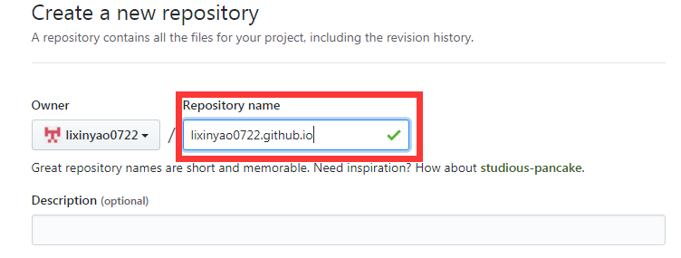
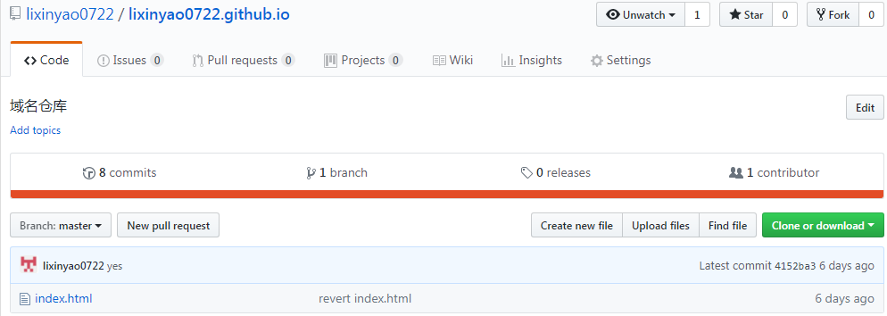
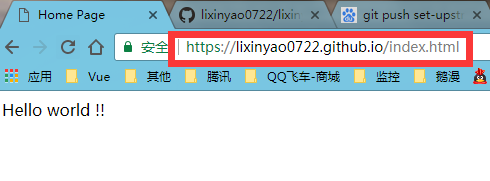
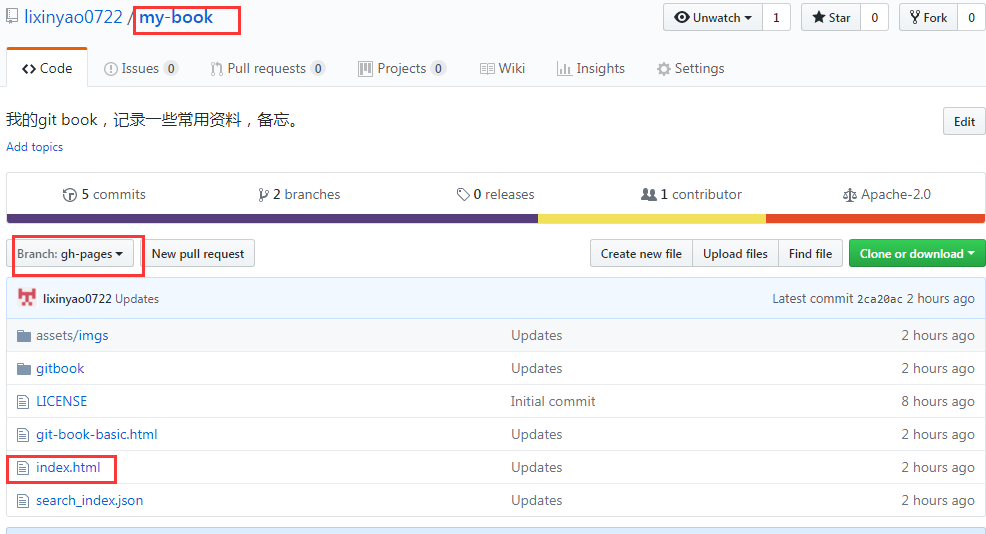

Github静态域名
1 创建和使用
为了能够在github上发布静态网页，需要创建一个特殊的仓库。
其名字为
{username}.github.io
我的是：lixinyao0722.github.io

创建该仓库之后，github便为你分配了域名lixinyao0722.github.io。
在该仓库放置静态html文件，可通过域名进行访问。
例如

仓库文件概况

浏览器访问方式
2 gh-pages与域名的关系
任何一个项目，都可以创建特殊分支gh-pages，该分支上的静态页面也能通过上述域名访问。

仓库名称：my-book
分支：gh-pages
页面：index.html
访问地址：https://lixinyao0722.github.io/my-book/index.html